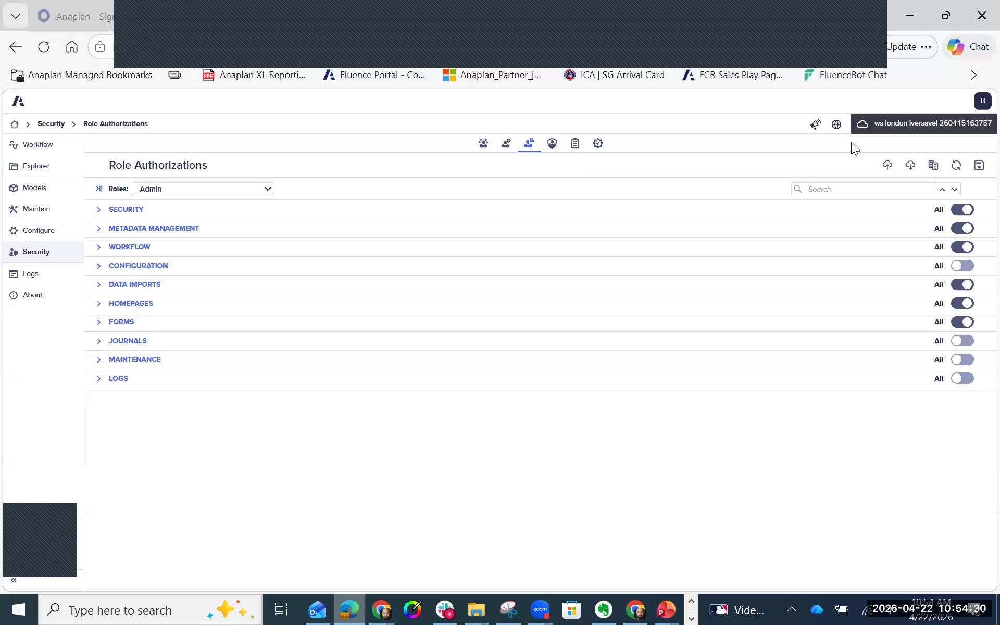
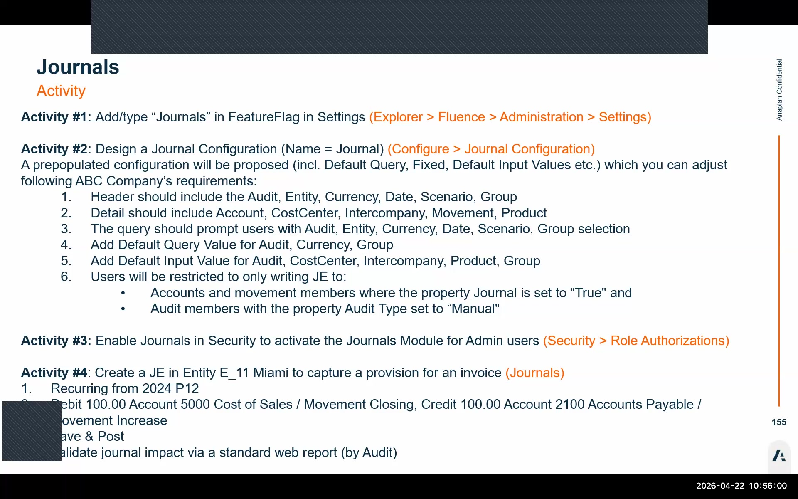

Journals
Enabling journals, configuration, and posting reclassification entries
The Journals module requires a feature flag enabled at the tenant level. This flag is NOT available in the web UI settings — it must be activated via the Excel settings file. For new customers, this may require opening a support request with Anaplan. Verify whether the feature flag is already enabled early in the project — do not wait until the go-live sprint to discover it's missing.
Additional note: Feature flags are not included in exported settings files, so they do not automatically transfer between environments (e.g., from UAT to production). Each environment needs the flag enabled separately.
Step 1: Enable Journal Permissions
After confirming the feature flag is enabled on the tenant, journal permissions must be turned on in the Security module. The Journals module will not appear in the left navigation until this step is complete.
Navigate to Security → Role Authorizations
Go to the Security module in the left navigation bar. Click the Role Authorizations tab (third tab in the Security module).
Enable ALL Journal Permissions
Find the Journals section within the Role Authorizations tab. Turn ALL journal permissions ON for the appropriate roles. This includes: create journals, edit journals, post journals, delete journals, and view journals.
Save
Click Save. After saving, the Journals module will appear in the left navigation menu. If it doesn't appear immediately, refresh the browser.

Step 2: Create a Journal Configuration
Before any journals can be posted, at least one journal configuration must exist. The configuration defines which dimension members are collected in the journal header (once per journal) versus the detail lines (once per journal line), and sets smart defaults to reduce user error.
Navigate to: Configure → General Configuration → Journal Configuration → click + to create a new configuration.
| Field | Setting | Notes |
|---|---|---|
| Name | Descriptive name (e.g., "Reclassification Journal") | Appears in the journal entry form |
| Consolidation model | Select the applicable consolidation model | Usually one model per tenant |
| Data view | Fixed value → Value | Sets the data view without user input; Value = source data view |
| Audit — Default query value | Manual Journal (parent member) | Limits available audit members to only children of Manual Journal |
| Audit — Default input value | Reclassification | Pre-selects the most common journal type; user can change |
| Date — Default input value | Global Current Period | Auto-populates to the current period (e.g., 2024 P12) |
| Header dimensions | Entity, Intercompany, Audit, Period/Date, Scenario | Captured once per journal entry |
| Detail dimensions | Account, Movement, Amount | Captured per line within the journal |

Setting a parent member as the default query for the Audit dimension acts as a filter — it limits which audit members users can select when creating a journal. By setting "Manual Journal" (parent), users can only post to its four children: Reclassification, Interco Adjustment, Other Manual, and Manual Interco Adjustment. This prevents accidental postings to Source GL, Proportional Method, Equity Method, or other audit members that should never have manual journal entries.
Default query value = restricts the available list. Default input value = pre-selects a value but the user can change it. These are different controls.
Once journal entries have been posted, do not change the Header/Detail flag configuration for any dimension. While the system technically allows this change, altering which dimensions are in the header vs. detail after journals exist can cause journal data loss or errors. Lock down the configuration before users begin posting journals and treat it as immutable.
Step 3: Understanding the Journal Module Structure
After setup, the Journals module works like a standard ledger entry system with FCR-specific controls built in.
📋 Header (Once Per Journal)
- Entity — which entity the journal applies to
- Intercompany — third-party or specific IC partner
- Audit — journal type (e.g., Reclassification)
- Period/Date — defaults to Global Current Period
- Scenario — typically Actuals
📄 Detail (Per Line)
- Account — the GL account being debited or credited
- Movement — movement dimension member (e.g., Closing, Increase)
- Amount — positive or negative value representing debit/credit
Example: Reclassification Journal Entry
The most common journal type in FCR is a reclassification — moving an amount from one account to another at the consolidated level without touching the source general ledger data.
This example reclassifies an amount from Cost of Sales to Accounts Payable, both as third-party (no intercompany counterpart).
| Line | Account | Intercompany | Movement | Entry |
|---|---|---|---|---|
| Debit | Cost of Sales | 3RD (third-party) | Closing | Positive amount |
| Credit | Accounts Payable | 3RD (third-party) | Increase | Negative amount (same value) |
Step 4: Validating the Journal Entry
After posting, verify the journal entry appeared in the consolidated financials.
Open Consolidated Financials by Audit
Navigate to the Consolidated Financials by Audit report. This report shows the breakdown of consolidated amounts by audit dimension member.
Drill into Contribution
Expand or filter to the Contribution audit rollup member. This contains all entity-level contributions including eliminations and manual journals.
Find the Reclassification Column
Look for the Reclass (Reclassification) audit member column. The amounts from your journal entry should appear here for the Cost of Sales and Accounts Payable accounts.
Journals that should repeat every period (e.g., standing reclassifications) can be marked as recurring. As part of the period initialization process, there is a dedicated step — Copy Recurring Journal Entries — that rolls these journals forward to the new period automatically. This is covered on the Period Initialization page.